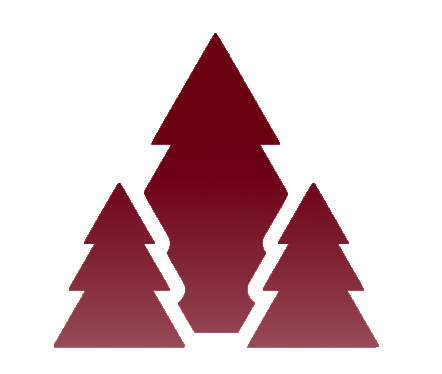

We have been working on our respective mini-games and mood settings. Gabriella had worked on how to use multiple images of our first-person character to animate the characters movements. She also worked on a parallax scrolling effect, along with an additional music. (ANGER MODE)

Worked on integrating jumping mechanics with the same animated movements. Along with adding a condition where every time the character lands on a key, a note will play and particles will spray out momentarily. Stephanie worked on a character controlled particle systems. (JOY MODE)
I have been working on two modes for exploring joy; one Music theme and the other Film theme. The progress I have made with the music has come far in that I have figured out how to coordinate the key movement with the characters placement. There are a lot of objects and functions working simultaneously. When the character is on a key platform, the platform should sink slightly as if the character has weight. When the tune corresponding to the key is playing, the corresponding joy bar should increase. The goal of the game is to charge up all the happiness before time is out. The challenge I am facing is distinguishing the jump moment from the regular placement of character. In that, I want the tune to play only at landing (or at least initially). I may remove jumping all together, at first, so that game works without it, but then implement it later.
For the film mode, I have successfully, worked with the video element in the p5.js canvas. The videos corresponding to the colors and levels of joy play and stop when I want them to, but they cannot be played onee after another. They can only work perfectly when they are played in isolation at each load of the game. I have created a clapboard class that communicates with the corresponding films and character collisions. The next steps would be to figure out how to detect when a video is playing and stop those videos when a specific film is selected. That way the game can be continuous.
The resources I used include
P5js Video Element Documentation
https://p5js.org/reference/#/p5.MediaElement
The Great Gatsby (2013) - The Green Light scene (10/10) MovieClips
https://www.youtube.com/watch?v=A1-XFXX8rU4
Mean Girls (2004) (1/4) Rules the PARAMOUNT Vault
https://www.youtube.com/watch?v=1ahmLuuQNKg
Amelie The Phone Booth (HD) - Audrey Tautou, Maurice Benichou MIRAMAX
https://www.youtube.com/watch?v=vD0h-Nb5qhs
Lucy (2014) - Brain usage 100% - [1080p]
https://www.youtube.com/watch?v=NdLTEC6X3pk
DOCUMENTATION
Music Code Documentation
Film Code Documentation
Levels of Joy:
Laetus
Material happiness
(The bar fills up quickly)
(The Great Gatsby directed by Baz Luhrmann)
Gatsby is obsessed with money, believing that it will get Daisy, whom he loves, to notice him and bring him the happiness. Ultimately, that money does not bring him happiness, but rather to his death. Laetus, is the happiness that comes from material possessions. It is usually temporary.
Prominent Color: GREEN
Felix
Egotistical happiness
(The bar fills up a little bit slower)
(Mean Girls directed by Mark Stephen Waters)
The plastics look down upon others, believing they are better in status than everyone else. That brings them power, which the protagonist and they equate to happiness. However, that happiness does not last long, as the protagonist loses the friends that really care about her, when she adopts this mentality. Felix, is the happiness that comes from believing that you better than others. When your life seems to be in a better state, there is a momentary happiness. Yet, this is an external cause for joy. It does not last long.
Prominent Color: PINK
Beautido
Happiness for Bringing others Joy
(The bar fills up pretty slowly)
(Amelie directed by Jean-Pierre Jeunet)
Amelie grants the man in the phone booth with items that remind him of his son, bringing him joy. This makes Amelie happy, as she watches from afar. Although this is not directly/physically benefiting her, she still feels joy. This is an internal joy, which last longer than the former two. Beautido is the joy that comes from helping others.
Prominent Color: ORANGE
Beautido Sublime
Happiness for Bringing others Joy
(The bar fills up really slow as it hardest happiness to fulfill)
(Lucy directed by Luc Besson)
Lucy, in this scene, has gained almost all the knowledge and purpose in the world. She is understanding that she is a small part of something grander, giving her sense of purpose. Beautido Sublime is the joy that is supposedly eternal, as it comes from a higher knowledge.
Prominent Color: BLUE
Ryan is currently working on the HTML buttons and navigations. Some designs for designs I had in mind include the previous buttons and right below.